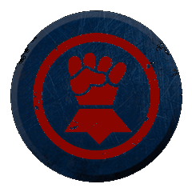
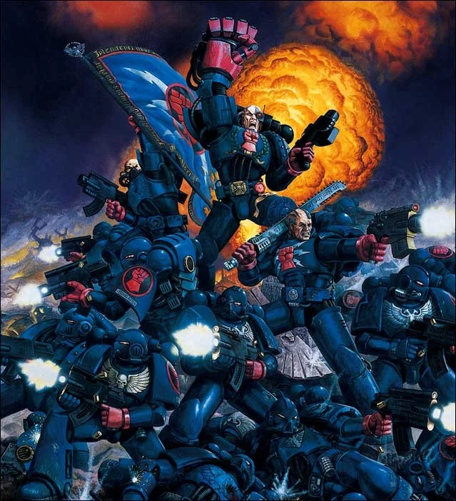
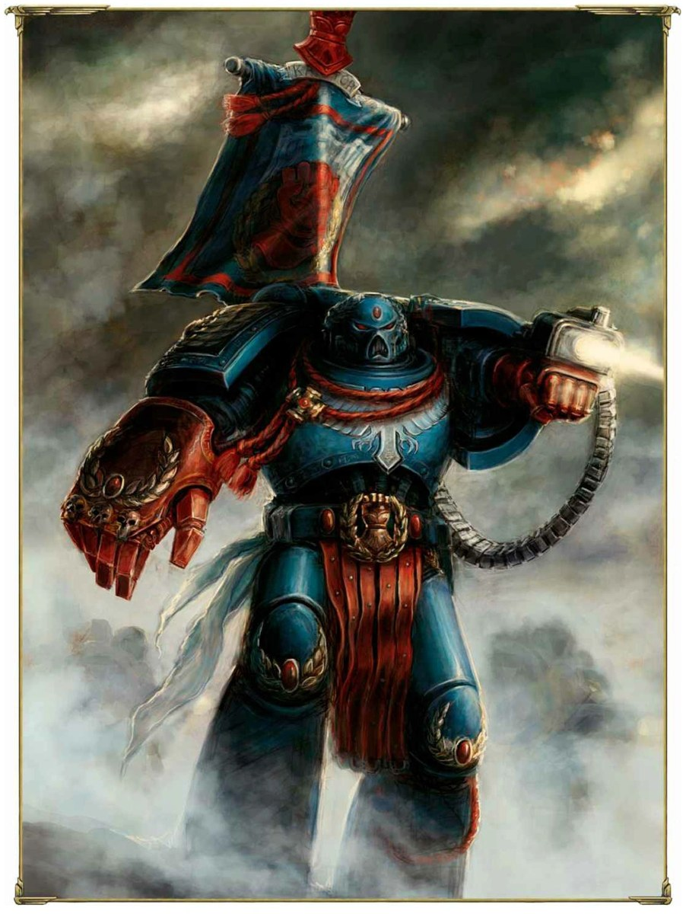

Crimson Fists
| Crimson Fists | |
|---|---|
 Heraldry of the Crimson Fists | |
| Founding | Second Founding (021.M31) |
| Parent Legion | Imperial Fists (VII) |
| Primarch | Rogal Dorn |
| Chapter Master | Pedro Kantor |
| Homeworld | Rynn's World, Loki Sector, Segmentum Tempestus |
| Fortress | The Arx Tyrannus (destroyed 989.M41; since rebuilt) |
| Allegiance | Imperium of Mankind |
| Colours | Dark blue, with crimson gauntlets |
| Specialty | Wars against the Orks |
| Size | About 1,000; reduced to about 100 in 989.M41; restored with Primaris Space Marines in the Era Indomitus |
| Notable battles | |
| Battle of Rynn's World (989–990.M41); Hellabore Assault (867.M41); Toran VI (934.M41); the relief of Rynn's World (c. 000.M42); War of Beasts on Vigilus (early M42) | |
| Fellow successors of Dorn | |
| Black Templars, Fists Exemplar, Excoriators, Soul Drinkers (disputed) | |
The Crimson Fists are a Space Marine Chapter of the Adeptus Astartes, created from the Imperial Fists Legion of Rogal Dorn in the Second Founding. They held Rynn's World in the Loki Sector of the Segmentum Tempestus for ten thousand years and are known across the Imperium for their wars against the Orks. In 989.M41 the Chapter was almost destroyed when its own fortress-monastery, the Arx Tyrannus, was struck by a misfired missile during the invasion of the Ork Warlord Snagrod, and only about a hundred battle-brothers survived.[1][2]
The survivors, under Chapter Master Pedro Kantor, held out until the Imperium relieved Rynn's World in 990.M41, and spent the following decade rebuilding. In the Era Indomitus, after daemons struck Rynn's World in the storms that followed the opening of the Great Rift, the Indomitus Crusade under Roboute Guilliman relieved the planet and brought the Chapter companies of Primaris Space Marines. The restored Crimson Fists have since fought on Vigilus and across the Loki Sector.[3]
History
[edit]Founding
[edit]The Crimson Fists were among the Chapters created from the Imperial Fists Legion when Roboute Guilliman's Codex Astartes broke the Legions apart in 021.M31. Their first Chapter Master was Alexis Polux, a warrior of the VII Legion who had won Dorn's respect during the Horus Heresy and who led the Chapter for its first eight hundred years. The Chapter's first recorded engagement was the defence of the colony of Uralek Prime against Aeldari Exodites. It took Rynn's World, a temperate agricultural world of the Loki Sector, as its home, and built the Arx Tyrannus there.[1][4][a]
Ten thousand years
[edit]The Chapter recorded many campaigns over the following millennia, most against Orks. Among them were the Thule Intervention of 978.M39, in which it fought alongside Aeldari of Iyanden; a feud with the Mortifactors in 819.M41; the Battle of the Steel Cross in 853.M41; the Hellabore Assault of 867.M41, led by Captain Alessio Cortez of the 4th Company; the defeat of the renegades called the Purge after the Vaxhallian Genocide of 926.M41; and the destruction of the warband of the Chaos Lord Sathorael at Toran VI in 934.M41. The Chapter was one of the eight that attended the 104th Feast of Blades in 949.M41.[1]
Battle of Rynn's World
[edit]
In 989.M41 Snagrod, the Ork warlord called the Arch-Arsonist of Charadon, led his WAAAGH! out of the Charadon sector into the Loki Sector. A 3rd Company strike force sent to kill him before he could attack failed when a scout's shot missed; only twenty-eight of its eighty-four warriors returned. Snagrod then invaded Rynn's World.[2]
As the Chapter prepared to meet him, a missile launched from the Arx Tyrannus's own defence batteries misfired and fell on the fortress-monastery's armoury. The explosion destroyed the Arx Tyrannus and killed most of the Chapter at a stroke. Pedro Kantor dug himself out of the ruins and gathered the survivors, who fought their way to New Rynn City. A few companies on campaign elsewhere, and isolated groups such as the warriors under Cortez at Traitor's Gorge, held on in the field.[2]
For eighteen months, from mid-989 to 990.M41, the survivors and the planetary defence forces held New Rynn City against the Orks. They were relieved in 990.M41 by a large Imperial Navy fleet and six Space Marine Chapters, who drove the Orks off the world. Fewer than one in ten of the Chapter had survived. Snagrod escaped.[2][5]
Rebuilding
[edit]In the years after the battle the Chapter rebuilt slowly. It recruited from a world devastated by the Orks, and it could not send its usual share of veterans to the Deathwatch. By the end of the 41st millennium it had restored perhaps three companies.[1]
The coming of the Avenging Son
[edit]
After the Fall of Cadia and the opening of the Great Rift in 999.M41, warp storms broke over Rynn's World and the Daemon Prince Rhaxor led a daemonic host against it. Kantor led three sorties to drive it back. The Indomitus Crusade arrived without warning; Guilliman himself led the relief, worked beside Kantor to destroy the daemons, and remained three days on Rynn's World while his fleet refitted. Archmagos Belisarius Cawl's Ark Mechanicus Zar-Quaesitor delivered whole companies of Primaris Space Marines bearing the Chapter's heraldry, made from gene-seed close to Dorn's own, and the Chapter's Apothecarion was given the means to make more.[3][6][b]
Before he left, Guilliman told Kantor to make the Loki Sector a fortress that could become the linchpin of the whole Segmentum. The Chapter integrated its new brothers through its rites, and began deploying measured strike forces and veteran kill-teams across the sector against Orks, rogue governors and daemon-cults. For the first time in decades it sent veterans to the Deathwatch.[3]
Vigilus
[edit]During the War of Beasts on the Sentinel World of Vigilus, at the mouth of the Nachmund Gauntlet, Kantor led five companies, half his Chapter, beside the Imperial Fists. Placed under the Vigilus Senate of Marneus Calgar, they were sent not against the Orks but into the Dirkden Hivesprawl, where they fought a web of delaying actions against the Genestealer cult called the Pauper Princes so that the civilian population could escape. Tens of thousands of lives were saved, although Dirkden itself was lost.[7]
Organisation
[edit]The Chapter follows the Codex Astartes. Besides the Arx Tyrannus the Chapter kept the Cassar, a fortified keep in the Silver Citadel of New Rynn City, which survived the invasion of 989.M41 and became the Chapter's refuge. New recruits must pass the trial of the Bloodied Fist, returning with their bare hand stained with the blood of a barb-dragon, before they may wear crimson on the right gauntlet; the Chapter holds a Festival of the Bloodied Fist each year. Since the Era Indomitus its companies have combined Firstborn and Primaris warriors.[1]
Beliefs and gene-seed
[edit]The Crimson Fists share the Imperial Fists' reverence for Dorn and their stubbornness in defence, but they are known as a more humane Chapter than many, mindful of the people they protect. Their gene-seed is regarded as pure, though it shares the Imperial Fists' known deficiencies. The Chapter's hatred of the Orks is a matter of honour as much as doctrine.[1]
Heraldry
[edit]The Chapter's armour is dark blue. The right gauntlet is painted crimson, a right won in the trial of the Bloodied Fist. Its badge is a red clenched fist in a red ring on a blue field.[1]
Timeline
[edit]| Date | Event |
|---|---|
| 021.M31 | Founding from the Imperial Fists |
| 978.M39 | Thule Intervention |
| 867.M41 | Hellabore Assault |
| 926–934.M41 | War against the Purge; Toran VI |
| 949.M41 | 104th Feast of Blades |
| 989–990.M41 | Battle of Rynn's World; destruction of the Arx Tyrannus |
| c. 000.M42 | Daemonic assault and relief of Rynn's World; Primaris reinforcement |
| Early M42 | War of Beasts on Vigilus |
See also
[edit]Notes
[edit]References
[edit]- ^ a b c d e f g Insignium Astartes (rev. M41). Ordo Astartes, Terra.
- ^ a b c d Kantor, Pedro (c. 991.M41). Report on the Fall of the Arx Tyrannus. Rynn's World.
- ^ a b c Records of the Indomitus Crusade (ongoing). Office of the Lord Commander.
- ^ Liber Primarchus (M32, revised M41). Administratum Archive, Terra.
- ^ Lexicanum Martialis. Officio Militaris.
- ^ Cawl, Belisarius (c. 999.M41). Notes on the Ultima Founding. Mars.
- ^ Chronicle of the Vigilus War Zone (early M42). Vigilus Senate.